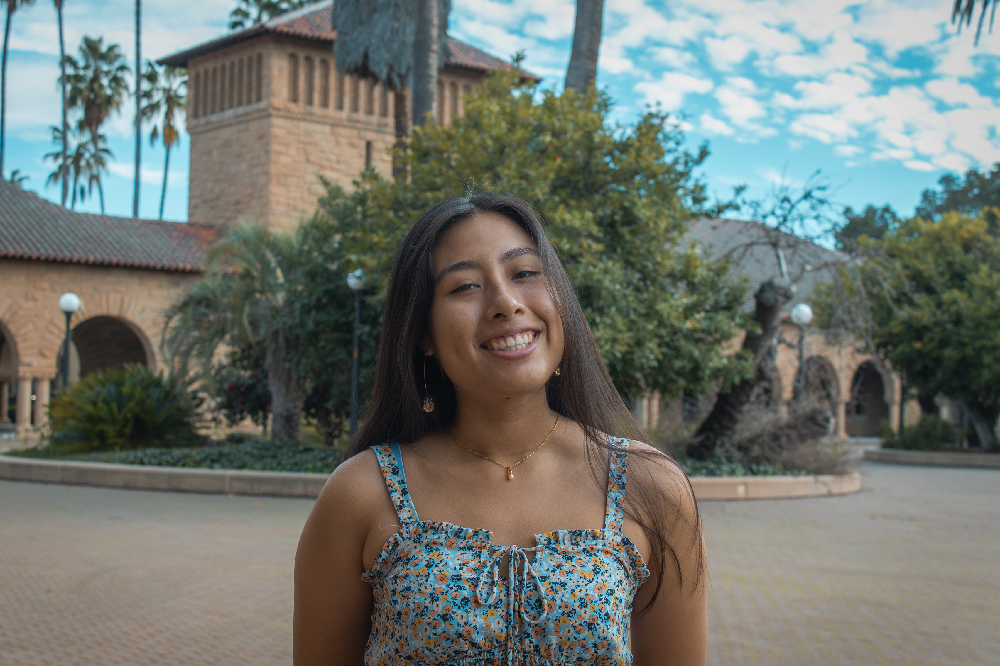

Karen S. Medina Aparicio

Objective Statement
I'm eager to put my knowledge and skills into practice to create a more just and sustainable reality for all.
Strongly interested in AI, Education and climate.
Education
Stanford University, CA | Grad. Date – June/2027 GPA: 4.02/4.0
B. S. Intended major in Comp. Sci. and Management Science & Engineering
Relevant Coursework:
- CS106B Programming Abstractions (C++)
- CS106A Programming Methodology (Python)
- CS53N: How can Generative AI help us learn
- MITx: Introduction to Computer Science and Programming Using Python
- Stanford Summer Engineering Academy (SSEA) – Collaborated with 50+ other engineering students in problem solving tasks using introductory computer science and linear algebra concepts.
University Gardens High School | San Juan, Puerto Rico
Specialized in Science and Mathematics High School Diploma | Graduated June 2023 GPA 4.0
- Awarded best math competition school representative having led team of 3 in 10+ competitions against 30+ schools
- Awarded Research in Science Trophy - conducted and presented most advanced and impactful research from our graduating class
Experience
Finalist Regeneron International Science and Engineering Fair (2)
Primary Investigator
- Improved professional medical accuracy for eye disease diagnosis using vision transformers and convolutional neural networks with 4k+ image dataset with accuracy 95%+ accuracy | Dallas, TX- May 2023
- Recipient of Biomedical Science and Engineering Award + scholarship
- Calculated ICU admission probability for infectious diseases based on patient characteristics using machine learning models (decision trees, XGBoost & artificial neural networks) to determine patient risk with AUC 80%+ | Project Atlanta, GA- May 2022
Amazon Alexa| June 2023
Finalist Presenter The Knowledge Society x Amazon Alexa
- Showcased to Amazon Executives research for potential increase in retention of Gen Z users through Amazon Connect | Deck
Canada/ USA Mathcamp Colby College, ME - July 2022
- Engaged in advanced mathematical theory topics (linear algebra, number theory, topography) with 100+ high achieving highschool students (on a full ride | acceptance rate:~10%
- Navigated different topics to improve understanding and bridge the gap in education within my community through teaching
Girls Who Code| June 2021
- Developed websites using HTML, CSS and Javascript to teach an introduction to web design and development to highschoolers
National Student Leadership Conference - Business Program Yale University - June 2022
Finance team leader
- Managed team of 5 by providing tools and instruction in software and company needs through market research data to maximize profits
- Presented company progress amongst 60+ other delegates
GripTape Challenger January 2021- June 2021
Small Business Owner
- Efficiently managed finances and designed graphics for clothing and accessories to build small business
- Secured $500 funding
Leadership
Professional Director - Society Of Latinx Engineers | Stanford, CA | 2024- present
- Organized logistics for Society of Hispanic Professional Engineers Conference for 15 distinguished students from our chapter
VP of Marketing for Stanford Women in Tech Entrepreneurship | Stanford, CA | 2024- present
-
Manage social media (over 1000+ active members) + coordinate guest speaker events with female leaders and founders
ASES Summit Coordinator- Entrepreneurship conference | Stanford, CA | Jan-April 2024
-
Organized week long conference with 35 highly driven international delegates
-
Successfully organized speaker sessions with David Hornik, GSB Tour, VC/Founder Mixer and team building activities.
-
Efficiently managed venue coordination
-
Acted as primary point of contact for delegates providing essential support as delegate liaison
Math Club- President
University Gardens HS - 2021-2023
-
Tutored 50+ students in calculus and precalculus for CollegeBoard testing
-
Team captain; taught and trained junior teams (15+ students) for interscholar regional and islandwide competitions
Programming club- President
University Gardens High School | 2022-2023
-
Taught 50+ highschool students Python and trained competition teams
-
Second Place Lockheed Martin Code Quest competition (island-wide hackathon) [Python]
Skills
- Python
- C++
- Project Management
- Web development (HTML, CSS, JS)
- Fluent in Spanish
>
Awards
- QB College Prep and National College Match Scholar
- Microsoft Office 365 Specialist
- Academic Excellence Scholarship
Hobbies
Contact Info!